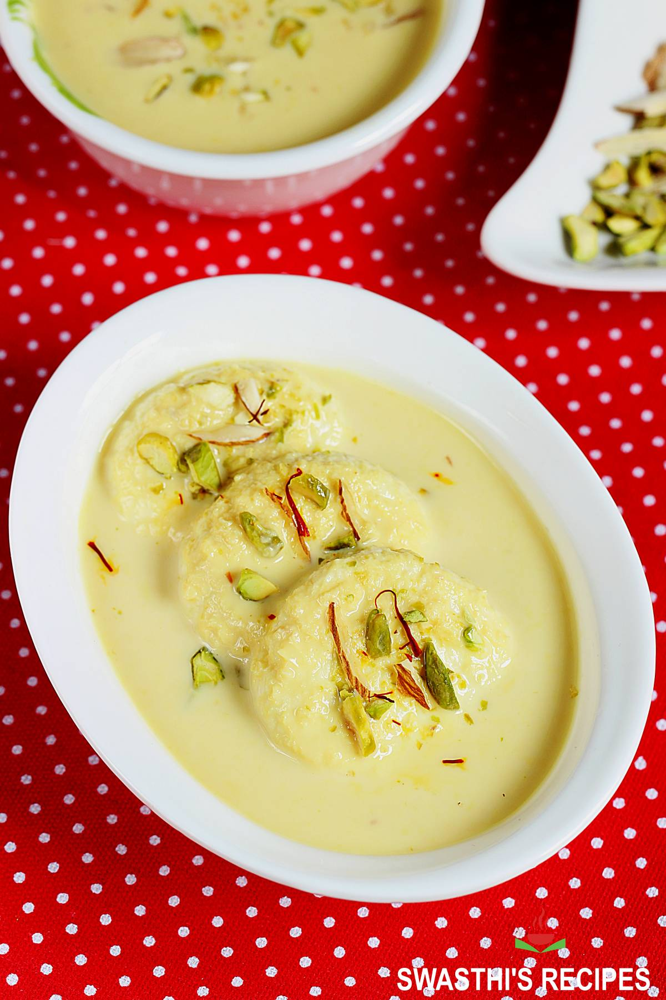

Ras Malai

Description
Ras malai,, rasamalai, or rossomalai, or is a dessert originating from the eastern regions of the Indian
subcontinent.
According to The Diner's Dictionary: Word Origins of Food and Drink published by Oxford University Press "The
term comes from Hindi raś 'juice', and malai 'cream'.
Ingredients
For Chhena
- 2 litre milk
- 2 tbsp vinegar
- 1½ cup sugar
- 3 pod cardamom
- 7 cup water
For Rabdi
- 1 litre milk
- few saffron
- pinch saffron food colour
- ½ cup sugar
- ¼ tsp cardamom powder
- 2 tbsp nuts (chopped)
Steps
how to prepare chenna for rasmalai
- firstly, get 2 litre to a boil stirring in between to prevent it from burning.
- add 2 tbsp vinegar and give stir. you will notice the milk starts to curdle.
- add 1 more tbsp of vinegar and stir until the milk curdles fully separating water.
- drain off the water over the cheesecloth. you can use any clean cloth here.
- rinse with cold water to remove sourness and stop cooking.
- squeeze the paneer gently and hang for 30 minutes.
- now take the moist paneer and crumble gently.
- using the palm, start to knead gently.
knead until the paneer mixture turns smooth without any grains. do not over-knead here as the rasgulla will turn
hard.
- pinch a small ball sized chenna and prepare smooth crack free balls, flatten slightly.
- keep the flattened paneer ball aside and cover with a moist cloth.
how to boil rasmalai in sugar syrup
- firstly, in a large vessel, take 1½ cup sugar, 3 pods cardamom and 7 cup water.
- stir and dissolve sugar.
- now boil the water for 5 minutes or until the syrup turns slightly sticky.
- drop in a prepared flattened paneer ball keeping the flame on high.
- cover and boil for 7 minutes or until the size of the ball doubles.
- chenna has been cooked well. keep aside.
how to make rabdi
- firstly, in a large kadai heat 1-litre milk, few saffron and pinch of saffron food colour.
- stir and get the milk to a boil.
- continue to cook until the milk thickens slightly.
- now add ½ cup sugar and continue to boil.
- do not make very thick milk as it will be difficult for chenna to absorb milk.
- also, add ¼ tsp cardamom powder and 2 tbsp nuts. mix well.
how to soak rasmalai in rabdi
- squeeze off the sugar syrup from the cooked paneer balls.
- place them in a tray and pour in prepared rabdi.
- rest for at least 4 hours or until the rasmali is soaked well.
- finally, enjoy rasmalai slightly warmed or chilled.
Back to HomePage